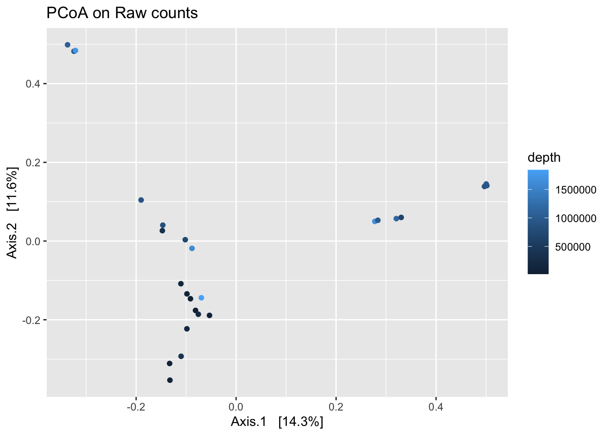

Chapter 2 Importing Data
There are multiple publicly available pre-compiled microbiome data sets. These data sets begin after the bioinformatics pipeline and are matrices of counts of OTUs per sample. These data sets can exist as phyloseq objects, a popular R package for microbiome analysis (McMurdie and Holmes 2013), or as separate tables of counts and metadata.
2.1 Global Patterns
The Global Patterns dataset (Caporaso et al. 2011) is an available dataset in the phyloseq package. These data contain samples from 25 different environmental samples and mock communities. The sampling depth of these samples averages 3.1 million total counts. We will use this dataset to work through the different normalization methods.
The following lines load the relevant packages and data.
##
## Attaching package: 'phyloseq'## The following object is masked from 'package:SummarizedExperiment':
##
## distance## The following object is masked from 'package:Biobase':
##
## sampleNames## The following object is masked from 'package:GenomicRanges':
##
## distance## The following object is masked from 'package:IRanges':
##
## distance## phyloseq-class experiment-level object
## otu_table() OTU Table: [ 19216 taxa and 26 samples ]
## sample_data() Sample Data: [ 26 samples by 7 sample variables ]
## tax_table() Taxonomy Table: [ 19216 taxa by 7 taxonomic ranks ]
## phy_tree() Phylogenetic Tree: [ 19216 tips and 19215 internal nodes ]2.2 Pre-processing Quality Control and Filtering
In addition to normalization, there are some steps we can perform that ideally remove technical artifacts from the sequencing process that only introduce noise.
These filtering steps commonly consist of filtering out samples with a low total read depth and filtering out taxa that are rarely abundant.
Let’s create a filtered version of the Global Patterns dataset. Note that there are only 26 samples, and all have a large library size, so we will not filter out any samples here.
For taxa filtering, we will remove taxa that appear fewer than 5 times in more than half the samples.
# Determine which taxa to remove
filter_taxa <- genefilter_sample(GlobalPatterns,
filterfun_sample(function(x) x > 5),
A=0.5*nsamples(GlobalPatterns))
# Remove those taxa from the GlobalPatterns dataset
# Save as an object with the un-normalized counts
gp_raw <- prune_taxa(filter_taxa, GlobalPatterns)
gp_raw## phyloseq-class experiment-level object
## otu_table() OTU Table: [ 219 taxa and 26 samples ]
## sample_data() Sample Data: [ 26 samples by 7 sample variables ]
## tax_table() Taxonomy Table: [ 219 taxa by 7 taxonomic ranks ]
## phy_tree() Phylogenetic Tree: [ 219 tips and 218 internal nodes ]This decreases the number of taxa from 19216 to 219. This is not surprising, because this dataset contains samples from widely different locations (gut, soil, etc), and few taxa are shared among all samples and locations. One potential problem with this approach is the widely different locations, so it is possible that the remaining taxa could be some technical artifact, or could be a general ‘core’ set of taxa shared across the disparate environments.
Additionally, let us save the total sampling depth as the variable depth in the metadata for the Global Patterns dataset.
We can visualize technical artifacts of sapling depth is by looking at principal coordinates plots using the Bray-Curtis dissimilarity, coloring by sampling depth too see how much variation can be explained by the original sampling depth.
gp_raw_dist <- phyloseq::ordinate(gp_raw, "PCoA", "bray")
plot_ordination(gp_raw,
gp_raw_dist,
color = "depth",
title = "PCoA on Raw counts")
We don’t see any extreme patterns with sampling depth, but this might additionally be due to the differences in different locations might have different sampling depths. This comparison might be more interesting when we only have one location we are sampling from.
References
Caporaso, J. Gregory, Christian L. Lauber, William A. Walters, Donna Berg-Lyons, Catherine A. Lozupone, Peter J. Turnbaugh, Noah Fierer, and Rob Knight. 2011. “Global Patterns of 16S rRNA Diversity at a Depth of Millions of Sequences Per Sample.” Proceedings of the National Academy of Sciences 108 (Supplement 1): 4516–22. https://doi.org/10.1073/pnas.1000080107.
McMurdie, Paul J., and Susan Holmes. 2013. “Phyloseq: An R Package for Reproducible Interactive Analysis and Graphics of Microbiome Census Data.” PLOS ONE 8 (4): e61217. https://doi.org/10.1371/journal.pone.0061217.